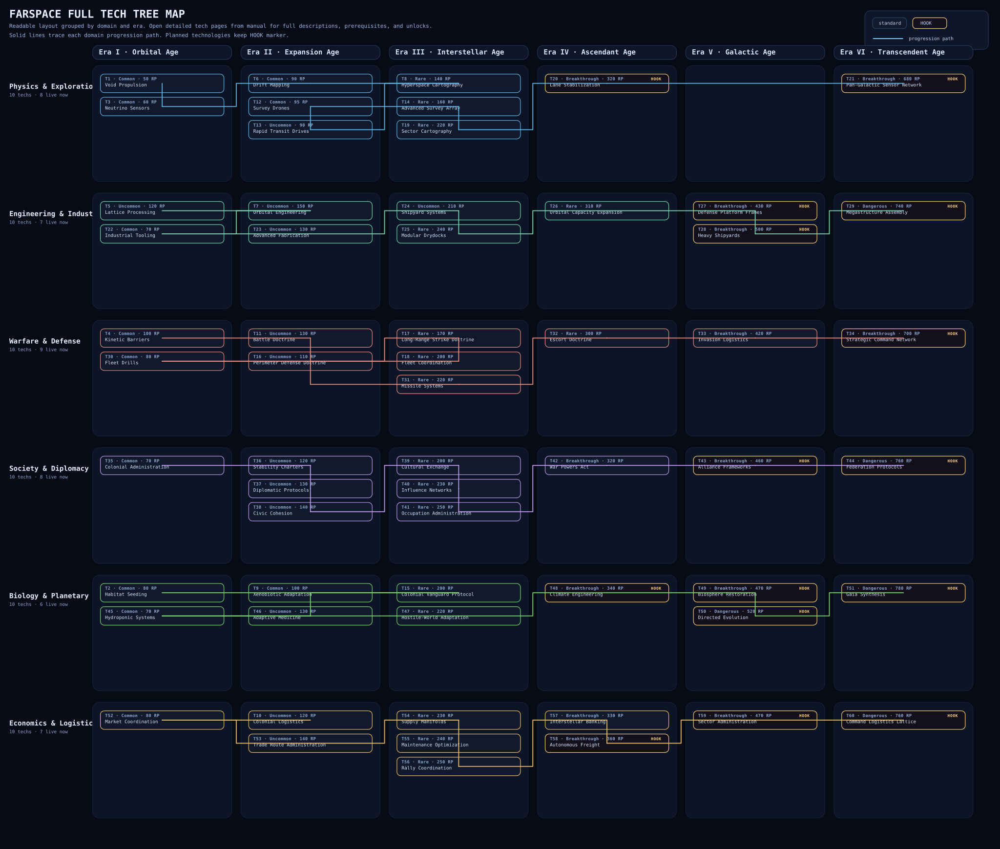
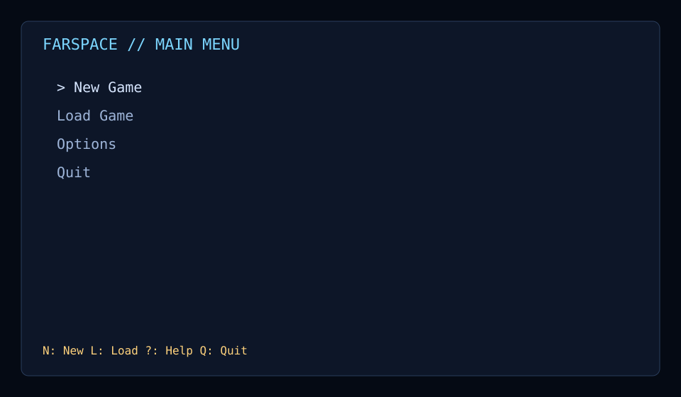
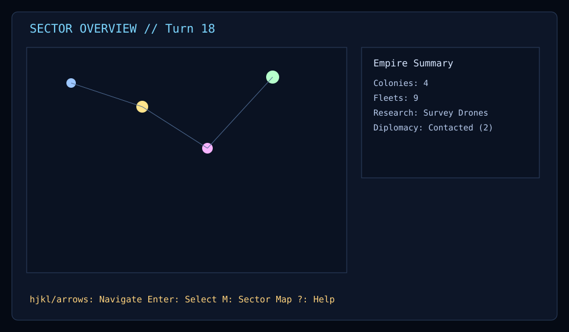
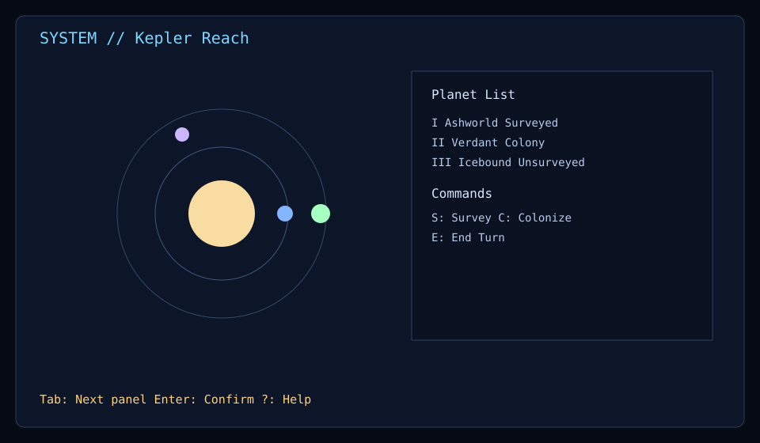
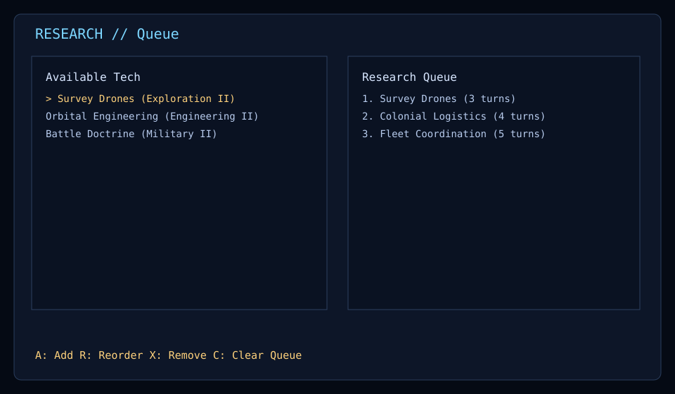
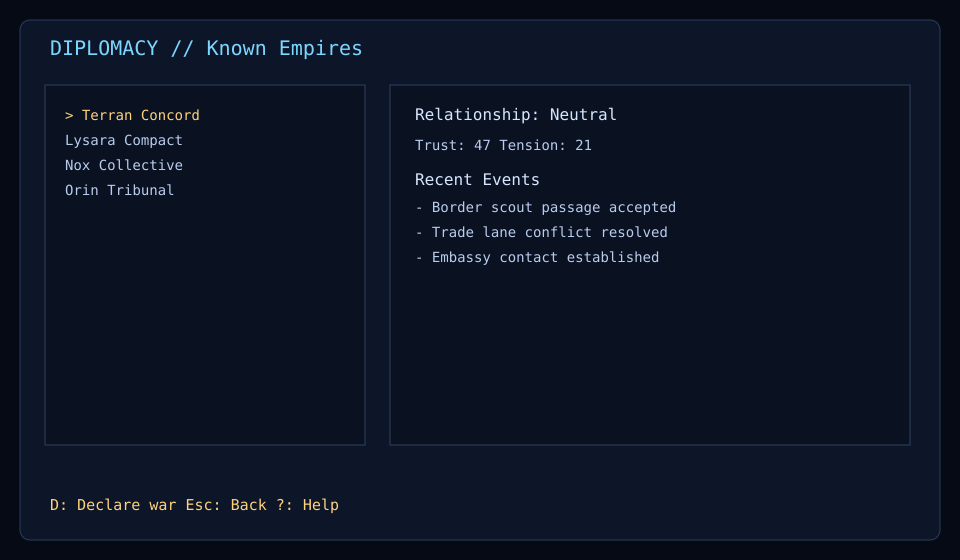

Install
Recommended: download pre-built binaries from releases.
- Releases: github.com/lgulliver/farspace/releases
- Linux/macOS: download binary,
chmod +x, run in terminal. - macOS first run: clear quarantine with
xattr -d com.apple.quarantine farspace. - Windows: run
farspace.exefrom PowerShell or Command Prompt.
Build from source
git clone https://github.com/lgulliver/farspace.git
cd farspace
cargo run --release -p farspaceContribute
Read project guidance first, then validate before PR.
Required local checks
cargo fmt --check
cargo clippy --workspace --all-targets -- -D warnings
cargo test --workspace --all-targetsTechnology Tree Overview
Full implemented tree map grouped by domain and era. Scroll both axes to inspect the entire layout. Source-of-truth listing: docs/design/tech-tree.md.
Tip: shift + mouse wheel or trackpad horizontal scroll moves across eras faster.

Screen Gallery
Representative visuals for key in-game screens.





